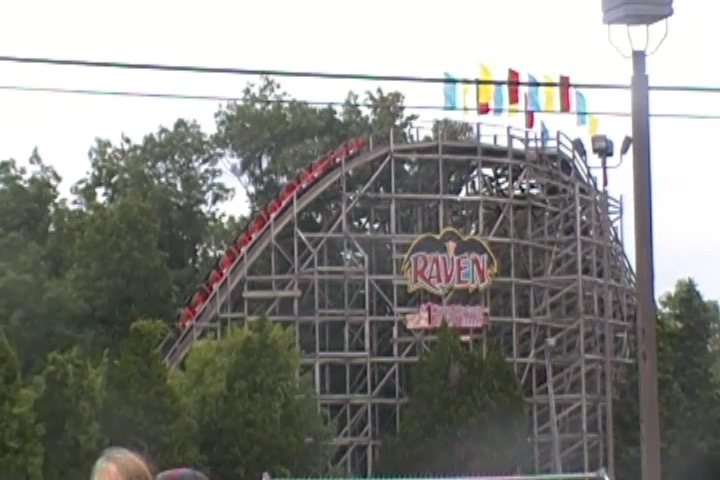
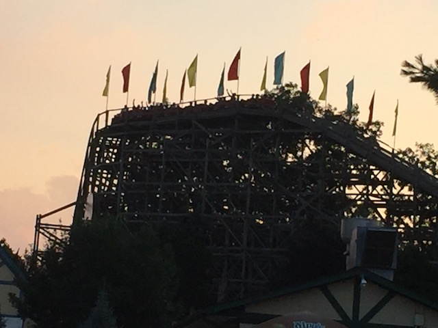

| |
Raven Review

Today, we'll be heading over to Holiday World where we'll be reviewing Raven. The parks first wooden coaster and its still a great one. You hop in the seat, pull down the lap bar, and away you go!!! First you roll around a turn, this leads us to some straight track. How exciting, but before you know it, we go through another turn and a small dip before we hear the typical clank clank clank of the lifthill. There's not much to see on the lifthill other than trees. But it doesn't really matter since this is a small ride, so before you know it, you're up and over and cresting the turn that leads straight to the first drop. It may be small, but it certainly does pick up a lot of speed, having you fly straight through that tunnel as if it were nothing but a blink. We then fly out of the tunnel and up a small little hill. Ok, if you catch it on a groggy morning without having warmed up, it will kind of slug over this hill, but in the evening, you certainly fly over this hill, slam through a quick turn, and pop down a small drop that does offer some really decent airtime. After that comes the big turn at Lake Rudolph. We really fly through here and get some really fun laterals through this curve. Though don't worry, if you're not a huge laterals fan, it's back to other stuff soon. If you are a huge laterals fan, you'd have more fun on the Legend. After that, we rise up, go through another sharp turn and dip down before curving back up. And then, it happens. The big drop. This is where the best airtime on the ride occurs. Even in the early morning when its all slow and sluggish and running like sh*t, there's still airtime on this spot. We slam through a couple of turns close to the ground that really give us some nice laterals and make us feel like we're going faster than we really are. We rise up, go through a couple crazy turns, and then BAM!!!! The ride is over. Yeah, that's Raven. For years, it was voted the best wooden coaster of all time until they built the Voyage. And while I certainly will say that it is not the best coaster of all time, not even close, but when you let it warm up, it can really give you a fun and powerful ride. Definetly check it out in the afternoon during your visit to Holiday World.
8/10
Location: Holiday World
Opened: 1995
Built by: Custom Coasters
Last Ridden: June 27, 2018
Raven Photos



Home
|